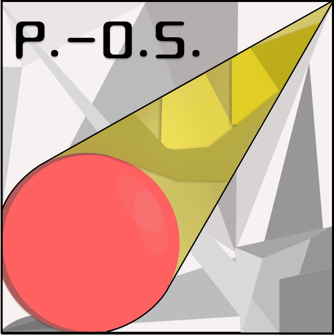

ИИ-менеджер
Контекстный диалог и работа с медиа.
Provision Operating System
ИИ-менеджер Discord: понимает, защищает, управляет и помнит.
Контекст принят. Система готова к работе.
Контекстный диалог и работа с медиа.
Спам, ссылки, вложения и антирейд.
Участники, роли, каналы и настройки.
Заявки, жалобы и работа команды сервера.
Проверяемые события, пинги и действия.
Изображения, видео и адаптивное создание GIF.
01 / AI
P.OS понимает обычную речь, уточняет цель и связывает запрос с реальным состоянием сервера.
P.OS связывает разговор, состояние Discord и подтверждённые действия в один понятный процесс.

P.OS02 / SECURITY
ИИ усиливает модерацию, но не получает право обходить проверяемые правила и полномочия Discord.
Ссылки, спам, массовые упоминания, вложения и рейд-паттерны.
Текст и медиа получают дополнительную оценку без слепого наказания.
Права, иерархия и подтверждение проверяются вне модели.
03 / OPERATOR
От участника до структуры сервера: P.OS превращает запрос в проверяемый план действий.
Пользователь, роль или канал сопоставляются с объектом Discord.
P.OS сверяет права, иерархию и защищённые цели.
Критичное действие не выполняется только на слове модели.
Успех или отказ остаются в журнале действий.
04 / MEMORY
P.OS хранит проверяемый журнал событий и отделяет найденные данные от предположений.
Кто упомянул мою роль, а затем удалил сообщение?
Источник: журнал событий сервера
Событие связано с сохранённой записью упоминания
Факт найден в журнале. Удаление сообщения не удалило запись события.
05 / TOOLKIT
P.OS объединяет ежедневные инструменты сервера, чтобы запрос не приходилось раскладывать на десяток отдельных команд.
Контекст, изображения, видео и естественный язык.
@P.OSПроверка риска, антирейд и обоснованные действия.
GUARDУчастники, роли, каналы, права и настройки.
OWNERСобытия, пинги, удалённые сообщения и история действий.
FACTSЗаявки, жалобы и закрытые процессы команды.
FLOWАдаптивная сборка GIF из изображений и видео.
p.gifP.OS создан Пумбой и развивается как единая система для разговора, защиты и управления сервером.
Посмотреть P.OS в работе